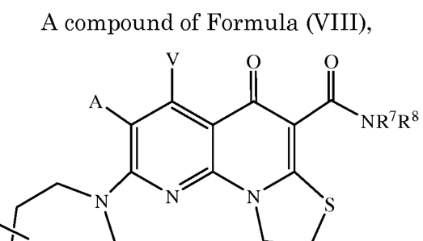

Patent Examination Benchmark Report
EP12710797.7 · QUINOLONE ANALOGS FOR TREATING AUTOIMMUNE DISEASES
来源 JSON：EP12710797-analysis.json
Application Preview
Claim Draft Preview
A compound of Formula (VI),
NR7R8
Q)m
Formula (VI)
or a pharmaceutically acceptable salt or ester thereof;
wherein:
X1 is CH or N;
X2,X3,X4, X5,X6 and X7independently are NR4, CH2, CHQ or C(Q)2, provided
that: (i) zero, one or two of X2, X3,X4,X5, X6 and X7 are NR4; (ii) when X1 is N,
both of X2 and X7 are not NR4; (ii) when X1 is N,X3 and X6 are not NR4; and
(iv) when X1is CH and two of X2, X3,X4, X5, X6 and X7 are NR4, the two NR4 are
located at adjacent ring positions or are separated by two or more other ring
positions;
A and V independently are H,halo, azido, -CN, -CF3, -CONR1R2,-NR1R2,-SR2,
-OR2,-R3,-W, -L-W,-W0, or -L-N(R)-Wo;
each Q is independently halo, azido, -CN, -CF3, -CONR1R2,-NR1R2, -SR2, -OR2,
-R3,-W,-L-W,-W0,or -L-N(R)-W0;
in each —NR1R2, R1 and R2 together with N may form an optionally substituted
azacyclic ring, optionally containing one additional heteroatom selected from N,
O and S as a ring member;
R1 is H or C1-C6 alkyl, optionally substituted with one or more halogens, or
=0;
R is H, or C1-C10 alkyl, C1-C10 heteroalkyl, C2-C10 alkenyl, or C2-C10
halogens, =O, or an optionally substituted 3-7 membered carbocyclic or
heterocyclic ring;
R3 is an optionally substituted C1-C10 alkyl, C2-C10 alkenyl, C5-C10 aryl, or
C6-C12 arylalkyl, or a heteroform of one of these, each of which may be
optionally substituted with one or more halogens, =O, or an optionally
substituted 3-6 membered carbocyclic or heterocyclic ring;
each R4 is independently H, or C1-C6 alkyl; or R4 may be -W, -L-W or -L-N(R)-
Wo;
each R is independently H or C1-C6 alkyl;
R7 is H and R8 is C1-C10 alkyl, C1-C10 heteroalkyl, C2-C10 alkenyl, or C2-C10
heteroalkenyl, each of which may be optionally substituted with one or more
halogens, =O, or an optionally substituted 3-7 membered carbocyclic or
heterocyclic ring; or in —NR7R8, R7 and R8 together with N may form an
optionally substituted azacyclic ring, optionally containing an additional
heteroatom selected from N, O and S as a ring member;
m is 0,1,2,3 or 4;
nis 0,1,2,3,4,or 5;
L is a C1-C10 alkylene, C1-C10 heteroalkylene, C2-C10 alkenylene or C2-C10
heteroalkenylene linker, each of which may be optionally substituted with one
C1-C6 alkyl;
W is an optionally substituted 4-7 membered azacyclic ring, optionally
containing an additional heteroatom selected from N, O and S as a ring
member; and
Wo is an optionally substituted 3-4 membered carbocyclic ring, or a C1-C6 alkyl
30group substituted with from 1 to 4 fluorine atoms,
for use in treating multiple sclerosis in a subject.
Draft claim 1 from claims review JSON; pages 1, 2, 3
Draft OCR claim only; verify against the authority PDF before using as legal text.
Review status: 0/15 verified · Authority PDF Claims review HTML Claims draft JSON
Markush / Formula

Links
- EPO Register Main
- EPO Register Documents
- Espacenet Search
- Local main HTMLEP12710797-main.html
- Local doclist CSVEP12710797-doclist.csv
Original Application Files
案件元数据
| 法域 | EP |
|---|---|
| 申请号 | EP12710797.7 |
| 发明名称 | QUINOLONE ANALOGS FOR TREATING AUTOIMMUNE DISEASES |
| 申请人 | Tel HaShomer Medical Research Infrastructure and Services Ltd. |
| 申请日 | 2012-02-26 |
| 审查意见日期 | 2017-11-30 |
| 授权结果 | granted |
审查维度评分
| 维度/分数 | 字段描述 | 分析 | 原文 | 翻译 | LLM证据说明 |
|---|---|---|---|---|---|
新颖性 100 | 是否被单一现有技术直接公开，未被质疑通常为高分。 | 从给定材料看，申请人曾就新颖性明确主张：权利要求1-15相对于D1（WO 2007/022474）是新的，因为本申请限定为“for use in multiple sclerosis”，而D1指向的是用于治疗银屑病的含核酸和喹诺酮类似物组合物。随后EPO发出拟授权并最终作出授予决定，说明单一现有技术下的新颖性异议没有在授权前持续存在。就当前记录而言，新颖性风险很低。 | FollowingexaminationofEuropeanpatentapplicationNo.12710797.7aEuropeanpatentwiththetitle and the supporting documents indicated in the communicationpursuant toRule71(3) EPC(EPOForm 2015,A52)dated 24.03.17ishereby granted inrespect of the designated ContractingStates. | 在对欧洲专利申请第12710797.7号以及规则71(3) EPC 通信中所指明的标题和支持文件进行审查后，现就所指定的缔约国授予一项欧洲专利。 | This is the final grant decision, which supports that no outstanding Art. 54 novelty objection survived to grant. |
创造性 100 | 按 EPO problem-solution/COMVIK 判断区别特征是否贡献技术效果。 | 本案就创造性而言，SOURCE 中没有看到审查员维持的 Art.56 否定结论；相反，程序后期先有 Rule 71(3) 意向授权，随后直接作出授权决定，说明 D2/D3 相关创造性争议已在审查中被克服。申请人在答复中专门围绕 D2 和 D3 论证“Claims 1-15 also involve an inventive step”，并主张 D3 反而 teach away，结合最终授权结果，当前创造性风险很低。该权利要求主要是针对特定化合物及其治疗多发性硬化用途，未见需要按 COMVIK 处理的明显非技术特征。唯一残余风险是：SOURCE 未展示审查员完整的 problem-solution reasoning，因此若未来被第三方挑战，仍可能围绕最接近现有技术、技术效果与显而易见性重新展开争辩。 | FollowingexaminationofEuropeanpatentapplicationNo.12710797.7aEuropeanpatentwiththetitle and the supporting documents indicated in the communicationpursuant toRule71(3) EPC(EPOForm 2015,A52)dated 24.03.17ishereby granted inrespect of the designated ContractingStates. | 经审查欧洲专利申请第12710797.7号后，现依据2017年03月24日根据规则71(3) EPC发出的通知中所指明的标题和支持文件，就所指定的缔约国授予该欧洲专利。 | 这段原文表明申请经过审查后被直接授予欧洲专利，说明没有持续存在的创造性障碍；结合申请人对 D2/D3 的创造性抗辩，支持该维度高分。 |
充分公开/支持 80 | 说明书是否足以实施，权利要求是否有原始公开和技术支撑。 | 从审查链条看，申请人在答复中明确把权利要求1对应到原始申请中的权利要求6和12，并说明先前基于支持性的异议已不再相关；随后EPO发出拟授权并最终授权，说明本案在充分公开/支持维度上已被接受。现有材料未显示仍有未克服的Art.83或Art.84支持性问题，当前风险较低，但若后续再引入新的限定，仍需重新核对原始公开基础以避免Art.123(2)风险。 | Following examination of European patent application No.12710797.7 a European patent with the title and the supporting documents indicated in the communication pursuant to Rule 71(3) EPC(EPO Form 2015,A52)dated 24.03.17 is hereby granted in respect of the designated Contracting States. | 经审查欧洲专利申请第12710797.7号后，现就所指定缔约国授予一项欧洲专利，其标题及根据EPC规则71(3)通信（EPO表格2015，A52）中所示的支持文件如上所列。 | 这段原文表明申请已基于Rule 71(3)通信中的文本和支持文件进入授权，说明审查员在最终阶段接受了说明书/权利要求的支持基础，因此支持性维度总体通过。 |
清楚性 100 | 权利要求术语、边界、简洁性和 Art.84 问题。 | 从 SOURCE 看，当前文本没有看到针对现行权利要求的 Art.84 清楚性否定结论。申请人在 2016 年回复中明确表示，先前针对旧权利要求 1-5 的 clarity 异议“are no longer relevant”，说明其已通过删减/改写权利要求予以回应。随后审查部在 Rule 71(3) 通知中给出拟授权文本，并在 2017 年 Decision to grant 中正式授权，表明当前权利要求文本已被接受。就清楚性而言，现阶段风险较低；但该权利要求为长 Markush 结构，后续若再修改，仍需注意术语边界、变量定义和 proviso 的一致性。 | FollowingexaminationofEuropeanpatentapplicationNo.12710797.7aEuropeanpatentwiththetitle and the supporting documents indicated in the communicationpursuant toRule71(3) EPC(EPOForm 2015,A52)dated 24.03.17ishereby granted inrespect of the designated ContractingStates. | 经审查欧洲专利申请第 12710797.7 号后，现依据 2015 年 EPO Form 52 所述的 Rule 71(3) EPC 通知中指明的标题及支持文件，特此就指定缔约国授予欧洲专利。 | 该原文是最终授权决定，直接表明审查程序已通过并授予专利，通常意味着未留下未解决的清楚性障碍，因此支持高分。 |
适格性 100 | 是否落入 EP Art.52 排除主题，是否具有进一步技术效果。 | 材料中未显示针对EP Art.52的排除主题异议；申请人最终将权利要求整理为“for use in treating multiple sclerosis in a subject”的治疗用途限定表达，属于目的限定产品/第二医疗用途形式，而不是被排除的纯治疗方法。审查程序随后发出拟授予通知并最终授予欧洲专利，说明该维度已通过。当前适格性风险很低，主要残余风险只会出现在后续若把权利要求改成纯治疗步骤，或删除治疗用途限定时，才可能重新触发Art.52/53(c)问题。 | FollowingexaminationofEuropeanpatentapplicationNo.12710797.7aEuropeanpatentwiththetitle
and the supporting documents indicated in the communicationpursuant toRule71(3) EPC(EPOForm
2015,A52)dated 24.03.17ishereby granted inrespect of the designated ContractingStates. | 经审查后，欧洲专利申请号12710797.7及其在Rule 71(3) EPC通知中列明的支持文件，现已授予所指定缔约国的欧洲专利。 | 该原文表明申请在审查后直接进入授权，说明没有因适格性而被阻却；结合权利要求的治疗用途限定，可支持高适格性评分。 |
风险原因
- Claim 1 finds basis in claims 6 and 12 as originally filed (and as published in WO2012/123938).权利要求1的依据见原始提交的权利要求6和12（以及WO2012/123938中公开的内容）。申请人直接给出权利要求1的原始基础，支持该权利要求并非新增内容，且有说明书/原始权利要求支撑。
- Previous claims 1-5 and 12 have been deleted. Accordingly, the objections against claims 1-5 based on clarity and lack of support raised in the international search report are no longer relevant.先前的权利要求1-5和12已被删除。因此，国际检索报告中针对权利要求1-5提出的基于清楚性和缺乏支持的异议已不再相关。这表明原先的支持性异议已通过删改克服，且审查程序继续推进到授权，降低当前支持风险。
- Following examination of European patent application No.12710797.7 a European patent with the title and the supporting documents indicated in the communication pursuant to Rule 71(3) EPC(EPO Form 2015,A52)dated 24.03.17 is hereby granted in respect of the designated Contracting States.经审查欧洲专利申请第12710797.7号后，现就所指定缔约国授予一项欧洲专利，其标题及根据EPC规则71(3)通信（EPO表格2015，A52）中所示的支持文件如上所列。这段原文表明申请已基于Rule 71(3)通信中的文本和支持文件进入授权，说明审查员在最终阶段接受了说明书/权利要求的支持基础，因此支持性维度总体通过。
- Novelty: Claims 1-15 are novel over WO 2007/022474 (D1),because they are directed to a compound for use in multiple sclerosis. In contrast,D1 is directed to a composition comprising a nucleic acid and a quinolone analog of formulas (I)-(V) for use in the 5新颖性：权利要求1-15相对于WO 2007/022474（D1）具有新颖性，因为它们是针对用于治疗多发性硬化症的化合物。相较之下，D1是针对一种包含核酸和式(I)-(V)喹诺酮类似物的组合物，用于治疗银屑病。This shows the applicant's novelty distinction over a single prior-art document, based on different therapeutic use.
- FollowingexaminationofEuropeanpatentapplicationNo.12710797.7aEuropeanpatentwiththetitle and the supporting documents indicated in the communicationpursuant toRule71(3) EPC(EPOForm 2015,A52)dated 24.03.17ishereby granted inrespect of the designated ContractingStates.在对欧洲专利申请第12710797.7号以及规则71(3) EPC 通信中所指明的标题和支持文件进行审查后，现就所指定的缔约国授予一项欧洲专利。The grant decision supports that the application proceeded to allowance, indicating no unresolved novelty objection remained.
建议依据原文
- Claim 1 finds basis in claims 6 and 12 as originally filed (and as published in WO2012/123938).权利要求1的依据见原始提交的权利要求6和12（以及WO2012/123938中公开的内容）。申请人直接给出权利要求1的原始基础，支持该权利要求并非新增内容，且有说明书/原始权利要求支撑。
- Previous claims 1-5 and 12 have been deleted. Accordingly, the objections against claims 1-5 based on clarity and lack of support raised in the international search report are no longer relevant.先前的权利要求1-5和12已被删除。因此，国际检索报告中针对权利要求1-5提出的基于清楚性和缺乏支持的异议已不再相关。这表明原先的支持性异议已通过删改克服，且审查程序继续推进到授权，降低当前支持风险。
- Following examination of European patent application No.12710797.7 a European patent with the title and the supporting documents indicated in the communication pursuant to Rule 71(3) EPC(EPO Form 2015,A52)dated 24.03.17 is hereby granted in respect of the designated Contracting States.经审查欧洲专利申请第12710797.7号后，现就所指定缔约国授予一项欧洲专利，其标题及根据EPC规则71(3)通信（EPO表格2015，A52）中所示的支持文件如上所列。这段原文表明申请已基于Rule 71(3)通信中的文本和支持文件进入授权，说明审查员在最终阶段接受了说明书/权利要求的支持基础，因此支持性维度总体通过。
- Novelty: Claims 1-15 are novel over WO 2007/022474 (D1),because they are directed to a compound for use in multiple sclerosis. In contrast,D1 is directed to a composition comprising a nucleic acid and a quinolone analog of formulas (I)-(V) for use in the 5新颖性：权利要求1-15相对于WO 2007/022474（D1）具有新颖性，因为它们是针对用于治疗多发性硬化症的化合物。相较之下，D1是针对一种包含核酸和式(I)-(V)喹诺酮类似物的组合物，用于治疗银屑病。This shows the applicant's novelty distinction over a single prior-art document, based on different therapeutic use.
- FollowingexaminationofEuropeanpatentapplicationNo.12710797.7aEuropeanpatentwiththetitle and the supporting documents indicated in the communicationpursuant toRule71(3) EPC(EPOForm 2015,A52)dated 24.03.17ishereby granted inrespect of the designated ContractingStates.在对欧洲专利申请第12710797.7号以及规则71(3) EPC 通信中所指明的标题和支持文件进行审查后，现就所指定的缔约国授予一项欧洲专利。The grant decision supports that the application proceeded to allowance, indicating no unresolved novelty objection remained.
证据链
| 受影响权利要求 | 1 |
|---|---|
| 审查轮次 | 1 |
引用先文 / 官网相关专利
| 序号 | 引用/相关专利 | 来源标记 | LLM证据说明 |
|---|---|---|---|
| 1 | WO2007022474 | Examined text examined_text | 该引用由审查文本直接提及，作为审查意见或检索意见中的对比文件线索。 |
| 2 | WO2010113096 | Examined text examined_text | 该引用由审查文本直接提及，作为审查意见或检索意见中的对比文件线索。 |
| 3 | WO2012123938 | Examined text examined_text | 该引用由审查文本直接提及，作为审查意见或检索意见中的对比文件线索。 |
| 4 | WO2009046383 | Examined text examined_text | Extracted from verified patent publication references in the benchmark input. |
| 5 | WO2008131134 | Examined text examined_text | Extracted from verified patent publication references in the benchmark input. |
说明书/支持证据
| 议题 | 位置/来源 | 原文 | 翻译 | LLM证据说明 |
|---|---|---|---|---|
| support_disc | Following examination of European patent application No.12710797.7 a European patent with the title and the supporting documents indicated in the communication pursuant to Rule 71(3) EPC(EPO Form 2015,A52)dated 24.03.17 is hereby granted in respect of the designated Contracting States. | 经审查欧洲专利申请第12710797.7号后，现就所指定缔约国授予一项欧洲专利，其标题及根据EPC规则71(3)通信（EPO表格2015，A52）中所示的支持文件如上所列。 | 这段原文表明申请已基于Rule 71(3)通信中的文本和支持文件进入授权，说明审查员在最终阶段接受了说明书/权利要求的支持基础，因此支持性维度总体通过。 | |
| 13-10-2016_Reply_to_communication_from_the_Examining_Division_EZK6D15C9526DSU_ocr.txt | Claim 1 finds basis in claims 6 and 12 as originally filed (and as published in WO2012/123938). | 权利要求1的依据见原始提交的权利要求6和12（以及WO2012/123938中公开的内容）。 | 申请人直接给出权利要求1的原始基础，支持该权利要求并非新增内容，且有说明书/原始权利要求支撑。 | |
| 13-10-2016_Reply_to_communication_from_the_Examining_Division_EZK6D15C9526DSU_ocr.txt | Previous claims 1-5 and 12 have been deleted. Accordingly, the objections against claims 1-5 based on clarity and lack of support raised in the international search report are no longer relevant. | 先前的权利要求1-5和12已被删除。因此，国际检索报告中针对权利要求1-5提出的基于清楚性和缺乏支持的异议已不再相关。 | 这表明原先的支持性异议已通过删改克服，且审查程序继续推进到授权，降低当前支持风险。 |
审查材料证据
| 议题 | 位置/来源 | 原文 | 翻译 | LLM证据说明 |
|---|---|---|---|---|
| novelty | 13-10-2016_Reply_to_communication_from_the_Examining_Division_EZK6D15C9526DSU_ocr.txt | Novelty:
Claims 1-15 are novel over WO 2007/022474 (D1),because they are directed to a
compound for use in multiple sclerosis. In contrast,D1 is directed to a composition
comprising a nucleic acid and a quinolone analog of formulas (I)-(V) for use in the
5 | 新颖性：权利要求1-15相对于WO 2007/022474（D1）具有新颖性，因为它们是针对用于治疗多发性硬化症的化合物。相较之下，D1是针对一种包含核酸和式(I)-(V)喹诺酮类似物的组合物，用于治疗银屑病。 | This shows the applicant's novelty distinction over a single prior-art document, based on different therapeutic use. |
| novelty | 30-11-2017_Decision_to_grant_a_European_patent_E069PW6Y9825DSU_ocr.txt | FollowingexaminationofEuropeanpatentapplicationNo.12710797.7aEuropeanpatentwiththetitle and the supporting documents indicated in the communicationpursuant toRule71(3) EPC(EPOForm 2015,A52)dated 24.03.17ishereby granted inrespect of the designated ContractingStates. | 在对欧洲专利申请第12710797.7号以及规则71(3) EPC 通信中所指明的标题和支持文件进行审查后，现就所指定的缔约国授予一项欧洲专利。 | The grant decision supports that the application proceeded to allowance, indicating no unresolved novelty objection remained. |
| inventive_step | 30-11-2017_Decision_to_grant_a_European_patent_E069PW6Y9825DSU_ocr.txt | FollowingexaminationofEuropeanpatentapplicationNo.12710797.7aEuropeanpatentwiththetitle and the supporting documents indicated in the communicationpursuant toRule71(3) EPC(EPOForm 2015,A52)dated 24.03.17ishereby granted inrespect of the designated ContractingStates. | 经审查欧洲专利申请第12710797.7号后，现依据2017年03月24日根据规则71(3) EPC发出的通知中所指明的标题和支持文件，就所指定的缔约国授予该欧洲专利。 | 授权决定是创造性争议已被克服的最强程序性证据，表明 Art.56 最终未阻止授权。 |
| inventive_step | 13-10-2016_Reply_to_communication_from_the_Examining_Division_EZK6D15C9526DSU_ocr.txt | Inventive Step:
Claims 1-15 alsoinvolve an inventive step in view of WO 2010/113096(D2) and the publication by Drygin Denis (D3)for the following reasons. | 创造性：就 WO 2010/113096（D2）和 Drygin Denis（D3）的公开而言，第1-15项权利要求同样具备创造性，理由如下。 | 该段显示申请人在审查中明确回应了 D2/D3 的创造性问题，并主张其方案相对于最接近现有技术并非显而易见。 |
| support | 13-10-2016_Reply_to_communication_from_the_Examining_Division_EZK6D15C9526DSU_ocr.txt | Claim 1 finds basis in claims 6 and 12 as originally filed (and as published in WO2012/123938). | 权利要求1的依据见原始提交的权利要求6和12（以及WO2012/123938中公开的内容）。 | 申请人直接给出权利要求1的原始基础，支持该权利要求并非新增内容，且有说明书/原始权利要求支撑。 |
| support | 13-10-2016_Reply_to_communication_from_the_Examining_Division_EZK6D15C9526DSU_ocr.txt | Previous claims 1-5 and 12 have been deleted. Accordingly, the objections against claims 1-5 based on clarity and lack of support raised in the international search report are no longer relevant. | 先前的权利要求1-5和12已被删除。因此，国际检索报告中针对权利要求1-5提出的基于清楚性和缺乏支持的异议已不再相关。 | 这表明原先的支持性异议已通过删改克服，且审查程序继续推进到授权，降低当前支持风险。 |
| clarity | 13-10-2016_Reply_to_communication_from_the_Examining_Division_EZK6D15C9526DSU_ocr.txt | Previous claims 1-5 and 12 have been deleted. Accordingly, the objections against claims 1-5 based on clarity and lack of support raised in the international search report are no longer relevant. | 先前的权利要求 1-5 和 12 已被删除。因此，国际检索报告中针对权利要求 1-5 提出的关于清楚性和缺乏支持的异议已不再相关。 | 这段原文明确提到清楚性异议，并说明申请人通过删除旧权利要求予以回应，支持当前文本的清楚性风险已显著降低。 |
| clarity | 30-11-2017_Decision_to_grant_a_European_patent_E069PW6Y9825DSU_ocr.txt | FollowingexaminationofEuropeanpatentapplicationNo.12710797.7aEuropeanpatentwiththetitle and the supporting documents indicated in the communicationpursuant toRule71(3) EPC(EPOForm 2015,A52)dated 24.03.17ishereby granted inrespect of the designated ContractingStates. | 经审查欧洲专利申请第 12710797.7 号后，现依据 2015 年 EPO Form 52 所述的 Rule 71(3) EPC 通知中指明的标题及支持文件，特此就指定缔约国授予欧洲专利。 | 最终授权本身表明审查部接受了现行文本，没有留下未解决的清楚性拒绝理由，因此支持高分。 |
| eligibility | 13-10-2016_Claims_EZK6D2TL7828DSU_ocr.txt | for use in treating multiple sclerosis in a subject. | 用于在受试者中治疗多发性硬化症。 | 该表述显示权利要求采用治疗用途限定，而非被排除的纯治疗方法，支持EP Art.52适格性。 |
| eligibility | 30-11-2017_Decision_to_grant_a_European_patent_E069PW6Y9825DSU_ocr.txt | FollowingexaminationofEuropeanpatentapplicationNo.12710797.7aEuropeanpatentwiththetitle
and the supporting documents indicated in the communicationpursuant toRule71(3) EPC(EPOForm
2015,A52)dated 24.03.17ishereby granted inrespect of the designated ContractingStates. | 经审查后，欧洲专利申请号12710797.7及其在Rule 71(3) EPC通知中列明的支持文件，现已授予所指定缔约国的欧洲专利。 | 授权决定表明该申请在审查后获得通过，没有因适格性问题被拒绝，支持高分判断。 |